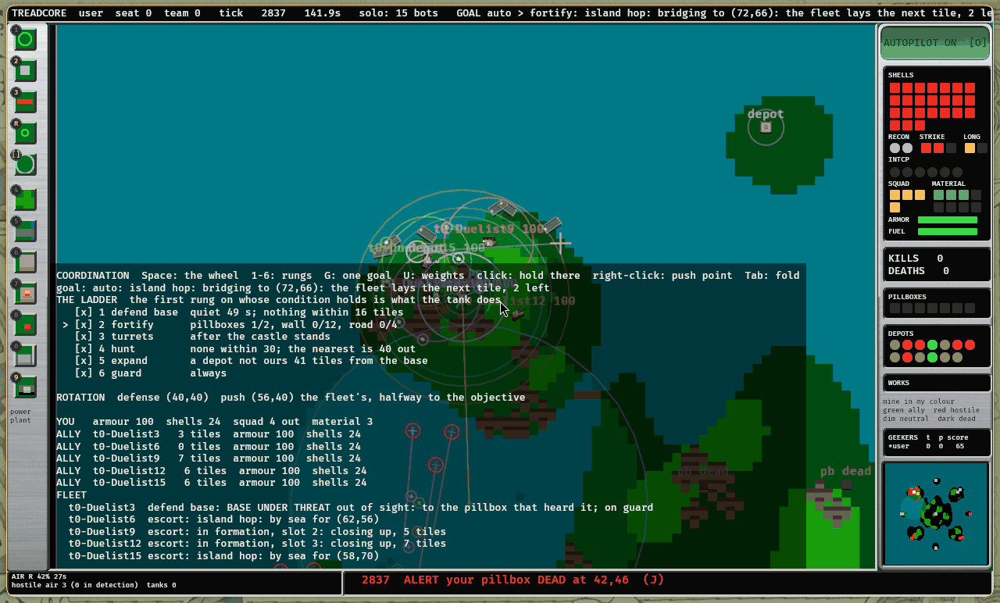
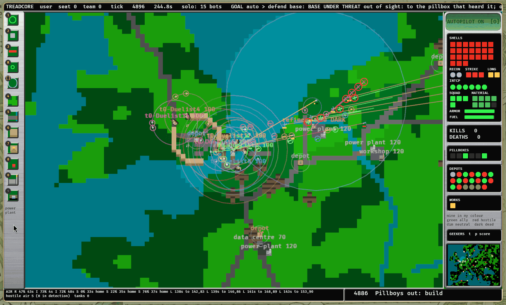
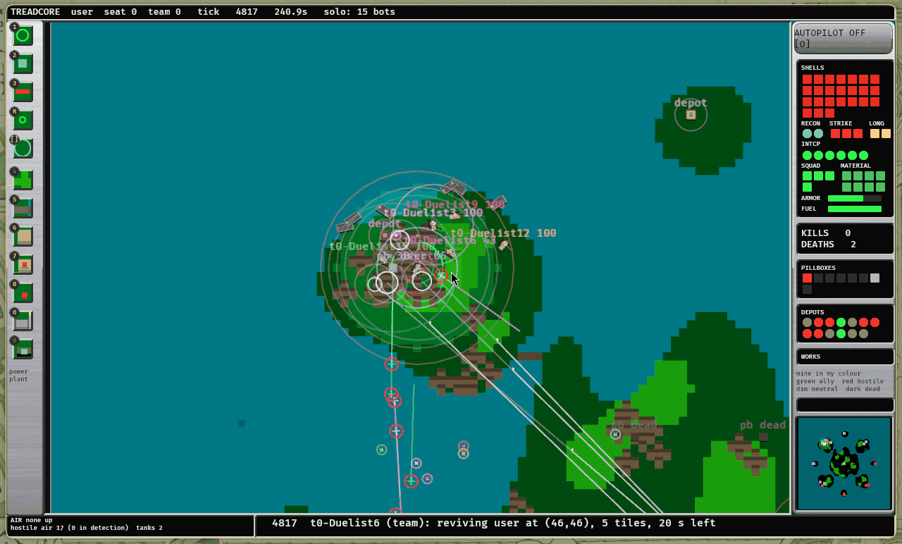
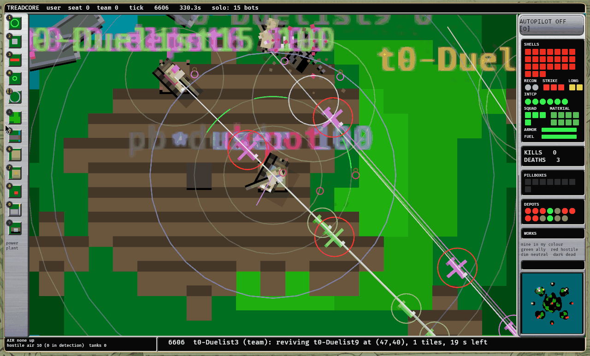
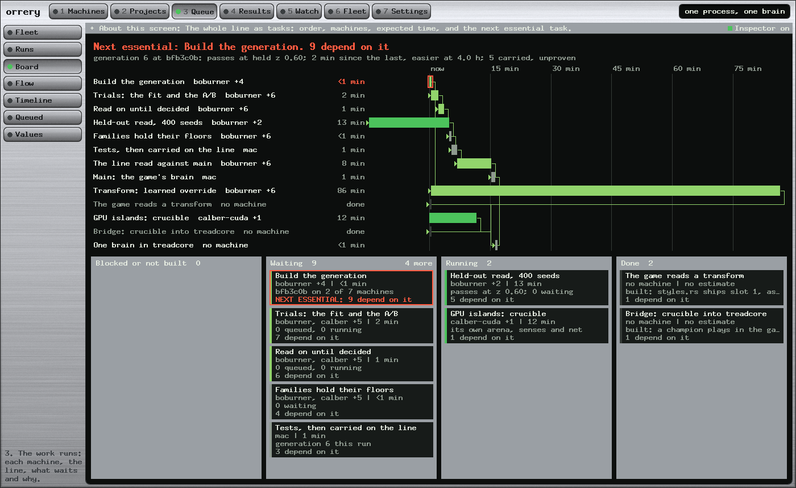

Abstract
The treadcore brain is a space of about 10^11 programs before a dial is turned, and until today nobody could ask for one by name. This report designs and builds three things at once. The game now reads a transform, so a learned override can ship and moving its slider no longer stops a game. Crucible reaches the game: a champion from the GPU islands plays in real matches, through an adapter that builds its 35 inputs from what a tank can see and keeps its own confidence gate. And there are eight named bot styles, of four kinds, chosen a team at a time on the launch menu or with --bots, one style or a mix a seat at a time, each named on the roster. Every kind ends in the same Command, which is what makes them comparable, and any new kind needs only to produce one. No default moved: style 0 is the brain as it was, and every family still holds. The census then gave two surprises: two hand-written styles beat the fleet's searched brain past the proof's bar on unseen seeds (Raider +3.06 +/- 0.74, Expander +2.35 +/- 0.73), which turned out to be one stale dial, worth +3.65 +/- 0.62 alone on all maps, and the learned styles work and are not yet good (Duelist -17.14, Scholar -56.84). Reading them also found and fixed two faults in the run itself.
Index Terms: game AI, hybrid intelligence, residual learning, opponent modelling, programming by optimization.
I. What was asked
Paul, 1 November, pointing at the Board's two red boxes:
"can you impliment The game reads a transform ... GPU islands; crucible ... Bridge crucible into treadcore ... NOT BUILT. Write a lab report of the design implimentation. Talk about combining the final AI decision toggle to be able to arrange teams using different types of AI. and different styles of AI play. We want Bot 0-7 Styles. And naming. Right now we don't have ways to differentiate, but they will be dials, right now we have All the permutation of brainz, I want to be able to select them. In the future we will have more than our A/B tested function Brinz, and the AI neural net. Impliment and design."
Earlier the same day: "We can also run multiple and mix or alternate between using source of instructions by computing both."
II. The design: where the final decision falls
Every mind in this project, however it is made, must end by saying a Command: Move, FireDirect, Launch and the rest. The simulator judges all of them alike. That is the one fixed point, and the design is built on it.
So a style is an answer to one question: what produces this seat's Commands? Today there are four answers.
| Kind | Who decides | Who may change it | Example | Built |
|---|---|---|---|---|
| Rules | the Commander, with a set of dials | nobody | Fleet, Raider, Castle | already; now by name |
| Transform | the Commander | a small net moves the Move, if sure | Overrider | now in the game |
| Net | a learned net, entirely | nobody | Scholar | now in the game |
| Duel | the Commander | a champion takes the fight, if sure | Duelist | new: the bridge |
The second and fourth are the same idea, reached twice: rules first, and a learned part that may override them by its own confidence. The transform found this by design and the hybrid crucible by the same reasoning, so the bridge needed no new theory. This answers Paul's "computing both": those two kinds do compute both on every decision, and the override is the mixing.
A. Why styles and dials are both needed
A dial says how much. A style says what kind. The search moves dials because the census can read a small move in a number. It cannot find "a castle-builder" by nudging: that takes many dials moved together, and each small step on the way reads worse. So a style is a named point in the space, one a person can recognize, choose and play against, and the dials remain the way the search improves the point it stands on.
B. Why it is not searched
bot_style is a dial, as asked: a whole number, on the U page, in any weights file. ab_trials tries every other choice each generation, and this one it skips, for two reasons. It would spend seven lanes a generation reading what is already known. Worse, a generation's bar is low on purpose (Part One of the Double Report): by chance alone a style could pass, and then replace every bot's whole brain. Whether the fleet's brain should become another style is a person's choice, made from the census below.
III. The game reads a transform
patch::slot had one way to find a file: CENSUS_PATCHES. In a game there is no census, and it panicked. That was a real fault for players, since the U page offers patch like any other row. It now looks in three places:
CENSUS_PATCHES/k.bin a census: and a slot not there STOPS THE RUN, or the rules would be read as the patch
TREADCORE_PATCHES/k.bin a person's own
what ships in the binary slot 1 today: nets/patches/1.bin, 3,780 bytes, 942 numbers
otherwise the rules aloneShipped, not located. A package has no fleet to fetch from, so the three learned files are compiled in. Overrider is the rules of today with that file on. Its transform has had only a handful of SPSA steps, so expect it to read near zero: it is here for the road, and a better file makes a better style with no other change.
IV. The bridge from Crucible
brains.md planned to teach a treadcore net by imitating a champion. Reading the champion changed the plan: a hybrid champion is already an override with a gate. It reads the fight and the scripted tank's answer, then gives a correction and a confidence, and below zero it plays the script exactly. So the bridge builds its inputs here and plays it as it is:
| Crucible's input | Where it comes from in the game |
|---|---|
| 0 to 23: twelve rays, wall and enemy | rays from the tank's heading, on the real map, to 40 tiles; the nearest hostile tank as a circle |
| 24: speed | me.speed / TANK_SPEED |
| 25, 27: its armour, the enemy's | armor / TANK_ARMOR |
| 26: gun ready | me.reload == 0 |
| 28, 29: bearing to the enemy | sine and cosine, relative to heading |
| 30: a shell near | the nearest hostile shell's landing point, within 10 tiles |
| 31: a constant 1 | |
| 32 to 34: the script's answer | crucible's own yardstick: turn, close to 11, fire when aimed |
And its four outputs:
y[3] <= 0 the gate is shut: this seat IS the Commander, to the last command
y[3] > 0, enemy within 40 act = clamp(script + y)
Move to pos + heading(+ act0 x 1 rad) x act1 x 6 tiles
FireDirect at lead(enemy) if act2 > 0, gun ready, within 10 tilesFive times a second, as a net decides. While open, it removes the rules' own Move, Stop and FireDirect and leaves everything else: mortars, drones, building, calls. A test proves the shut gate plays the rules exactly; another that with no enemy to see it stays out of it.
Why this and not a clone. A clone would train for days toward a copy of something trained in another world. The adapter runs today and answers the first question directly: does what the GPU learned help at all, in the real game? A clone is still the right tool if it does, since a net reading treadcore's senses could learn beyond the arena.
What it cannot know. Its world has one enemy, six pillars, no base, and three hits to a life. Here it sees only hostile tanks within vision, picks the nearest of them, and treats water as open. Its reload, its shells and its fire all differ. So a loss would not show the idea is wrong: it would show what this champion, trained for that world, is worth in this one.
V. Eight styles, by name
| Slot | Name | Kind | What it is |
|---|---|---|---|
| 0 | Fleet | Rules | the brain the fleet's search has carried: today's defaults |
| 1 | Raider | Rules | goes and fights: leans to expanding, closes at even odds, picks off the wounded |
| 2 | Castle | Rules | holds its ground: leans to fortifying and defending |
| 3 | Expander | Rules | takes the map: depots and pillboxes first |
| 4 | Timid | Rules | keeps away: fights only with the odds well on its side |
| 5 | Overrider | Transform | the rules, with the learned transform moving their answer when it is sure |
| 6 | Scholar | Net | a net that learned by imitating the rules: all senses, no rules |
| 7 | Duelist | Duel | the rules, with a champion from crucible's GPU islands in every fight |
The five rule styles are the play styles of backlog 60, already in profiles/, already tested: they had never been reachable from a menu. The slot numbers are permanent, since a weights file may name one.
A. Arranging teams
Each team row on the launch menu chooses a style. The last choice in each is a mix.

And by hand, where any arrangement can be typed:
treadcore --bots 1=raider --bots 2=castle # a side of raiders against a side of castles
treadcore --bots 1=1,2,6 # that team's seats take them in turn
treadcore --bots all=duelist # everyone
treadcore --bots 0=scholar --autopilot --bots 1=7 # watch your own net-driven team fightTeam 0 is yours. A seat takes its team's list in turn. A team not named plays style 0.
B. Naming
A style goes by its name on the roster, which is the whole of how a person tells them apart in play. Here is the roster of a real match from this report, played on this Mac with --bots 0=raider --bots 1=7 --bots 2=1,2,6 on Naval, for 30 seconds, from the game's own log:
t0 p0 user ashore score 0 armor 100 shells 23 depots 0 (a person)
t0 p3 t0-Raider3 afloat score 0 armor 100 shells 22 depots 0 defend base: island hop: sailing
t0 p9 t0-Raider9 ashore score 25 armor 100 shells 22 depots 1 escort: taking the depot
t1 p1 t1-Duelist1 ashore score 0 armor 100 shells 24 depots 0 auto > fortify (commanding 0 crews)
t1 p10 t1-Duelist10 ashore score 25 armor 100 shells 22 depots 1 escort: taking the depot
t2 p2 t2-Raider2 ashore score 0 armor 100 shells 23 depots 0 auto > expand: island hop
t2 p5 t2-Castle5 ashore score 0 armor 100 shells 22 depots 0 defend base: rotation: at the defense
t2 p8 t2-Scholar8 ashore score 0 armor 100 shells 24 depots 0 net: [(Drive, 9), (Gun, 0), (Lead, 0), ...
t2 p11 t2-Raider11 ashore score 25 armor 100 shells 22 depots 1 escort: in formation, slot 2Three kinds of mind on one team and one map, and no fault in the log. The last column shows the difference: a Commander states its goal, and a net states its head's choices.
Seen in play
On 1 November these ran in a real window on treadcore-vm, built from main at 5c599f7: Naval with three teams, then Europe with Duelists against Raiders, about six minutes each.



t0-Duelist6 (team): reviving user at (46,46). The autopilot lamp reads off in this frame and the next; I did not find out why.
The Europe roster at 365 seconds, from the game's log, cut at the right margin:
t0 p2 t0-Duelist2 ashore score 325 armor 100 depots 1 boxes 1 defend base: rotati...
t0 p4 t0-Duelist4 ashore score 308 armor 60 depots 1 boxes 0 escort: in formatio...
t0 p10 t0-Duelist10 ashore score 505 armor 79 depots 1 boxes 0 escort: in formatio...
t1 p1 t1-Raider1 ashore score 112 armor 100 depots 4 boxes 0 auto > expand (comm...
t1 p3 t1-Raider3 ashore score 200 armor 100 depots 1 boxes 0 defend base: rotati...
t1 p5 t1-Raider5 ashore score 300 armor 98 depots 1 boxes 1 escort: in formatio...And in the Naval match, seats on one team running three styles at once:
t2 p2 t2-Raider2 dead score 245 armor 0 depots 0
t2 p5 t2-Castle5 afloat score 425 armor 100 depots 0 defend base: island...
t2 p8 t2-Scholar8 ashore score 30 armor 100 depots 0 net: [(Drive, 9), (...
t2 p14 t2-Castle14 ashore score 120 armor 100 depots 1 auto > fortify: the...What the pictures say that the census cannot:
- A mix on one team works. The Scholar's line is a net's choices, and the Castle's beside it is an errand.
- From the outside, Duelists and Raiders look alike. At 365 seconds six of seven Duelists and five of eight Raiders were on one errand, in formation. They share the team's layer, so the difference is in how a tank steers and what its dials prefer, which a person sees only close up.
- In a bunch the names overprint, and the name is the whole of how a person tells styles apart. The teams here bunched in most frames. That is open.
What they do not say: which is better. The Duelists led this Europe match at that moment, 2,003 points among seven tanks to 1,532 among eight, with a person's seat on their side. The census has them 17.14 a seat behind over 110 seeds, and the census is the one to believe: six minutes of one match is a picture, not a read.
VI. Results: every style read by the census
| Style | Kind | Points a seat against Fleet | z | Seeds | Worst map | Best map |
|---|---|---|---|---|---|---|
| 1 Raider | Rules | +1.94 +/- 1.36 | +1.4 | 110 | fidos-airstrip -8.1 | europe +12.8 |
| 2 Castle | Rules | -2.19 +/- 0.77 | -2.8 | 110 | generated -11.5 | fidos-airstrip +2.0 |
| 3 Expander | Rules | +1.97 +/- 1.39 | +1.4 | 110 | atlantic -10.5 | europe +13.4 |
| 4 Timid | Rules | +3.15 +/- 1.40 | +2.2 | 110 | fidos-airstrip -3.3 | big-lizard +11.6 |
| 5 Overrider | Transform | +0.28 +/- 0.72 | +0.4 | 110 | big-lizard -2.8 | naval +4.1 |
| 6 Scholar | Net | -56.84 +/- 1.97 | -28.9 | 110 | atlantic -83.9 | fortressislesx -28.9 |
| 7 Duelist | Duel | -17.14 +/- 1.34 | -12.8 | 110 | industry -28.1 | europe -1.7 |
The three that read above Fleet were then read again, on seeds of their own:
| Style | Points a seat against Fleet | z | Seeds |
|---|---|---|---|
| 1 Raider | +3.06 +/- 0.74 | +4.1 | 400 |
| 3 Expander | +2.35 +/- 0.73 | +3.2 | 400 |
| 4 Timid | +0.39 +/- 0.62 | +0.6 | 400 |
How to read these. Points a seat, a whole team of the style against whole teams of Fleet, on all eleven maps, on the build of each read's day. Both are the census's own numbers, by the same road a dial takes. The search's own bar for main is z 3.
A. The hand-written styles beat the search's brain
This was not expected, and it is the report's largest finding. Raider reads +3.06 +/- 0.74 and Expander +2.35 +/- 0.73 over 400 seeds each, z 4.1 and z 3.2, both past the proof's bar. These are play styles written by hand in October, with a dozen dials each, against a brain the fleet has searched for days. Timid is the warning beside them: it read +3.15 past two errors at 110 seeds, the best of all, and fell to +0.39 +/- 0.62 on unseen seeds, which is exactly what picking the best first read does.
Three cautions before anyone acts on it:
- Most of it is one map. On
europeboth read about +18 a seat. Without it, Raider averages about +1.6 and Expander about +0.8. Section VII follows this up, and it corrects the guess made here: it is one dial, and it matters on nearly every map. - Seven were looked at and the best three were kept, which is why they were read again on seeds of their own, and these numbers are those reads.
- Each also loses somewhere. Raider is -3.6 on
fidos-airstrip; Expander is -5.2 onatlantic.
bot_style is not searched, on purpose. Nothing has moved.
B. What is not better
Castle reads -2.19 +/- 0.77: a fortress gives up a little, which is a fair price for a style a person may enjoy playing against. Overrider reads +0.28 +/- 0.72: the transform does no harm and no good yet, as expected of one this early in its training.
C. The learned styles: the road works, and the minds are not ready
Scholar reads -56.84 +/- 1.97. The old "about 20 behind" dates from an earlier game. The game now pays for building, roads and advancing, and a net that cannot build earns none of it. It plays its part in a mixed team, and no one should expect it to carry one.
Duelist reads -17.14 +/- 1.34, after one round of correcting the adapter. Its history is the useful part:
| Build | Read | Seeds | What changed |
|---|---|---|---|
| first | -25.20 +/- 1.02 | 110, one map (macmini) | the champion took Move and gun |
| errand restored | -17.83 +/- 1.97 | 24, here | the rules say a Move once, so a duel had left the tank stranded |
| rules keep the gun | -14.88 +/- 3.40 | 24, here | its fire output means "my hull is on him", not a trigger |
| as shipped | -17.14 +/- 1.34 | 110, all maps | the same build as the row above, better read |
The last read is the one to quote. So a champion from a duel on an empty arena, steering a tank in a real battle, costs 17 points a seat: the GPU's work now reaches the game, and it is not yet good there. Its gate opens whenever an enemy is near, and steering for a duel is a poor way to hold ground, take depots or stay near a team. Three things could change this: open the gate more rarely; train islands against opponents and terrain nearer the game, with the families as their exam; or clone the champion and fine-tune it on the real senses. All three are measurable now, because the road exists.
D. Two faults this work found
By-hand census runs on macmini read one map of eleven. The fix of 31 October reached only the search's jobs. Castle first read -3.88 and the Duelist -25 that way, so those reads are discarded and read again. Fixed in census_job.
An anchor undid three generations on noise. While these reads ran, w4845, the defaults from before r0069, passed at a generation's low bar and went on the line as generation 5 on +0.29 +/- 0.38, z 0.76, returning bio, alpha and the rest to where main has them. A find may be carried unproven because the proof stands behind it. A retreat has nothing behind it. An anchor must now clear the proof's z 3, with a test. We did not rewrite the line by hand on a live run: the carry is reading those finds again on the new baseline, which is the road they should come back by. And the commit said "no change" while changing six values: that label is still wrong.
VII. Amendment: what europe turned out to be
Paul: "look at europe first, find the fault." Section VI-A guessed at a fault on that one map. The guess was half wrong: the fault is everywhere, and europe only shows it loudest.
What the gain was made of. Raider's +17.5 on europe is +15.9 rewards, with kills and deaths even. Itemised over 28 seeds, +11.75 of it is tiles advanced, +2.42 advance stages, +1.57 rotations. So a Raider team simply goes forward more, and a big map has the most ground to pay for.
Which dial. Raider moves twelve. One at a time, on europe, 20 seeds each:
| Trial | On europe |
|---|---|
| Raider, all twelve | +18.68 +/- 4.45 (28 seeds) |
| its four posture dials | +16.45 +/- 5.54 |
w_pos_fortify 6.0 to 0.4, alone | +16.41 +/- 5.90 |
w_pos_expand 0.4 to 3.0, alone | +5.93 +/- 3.44 |
The fleet then read that one dial on all eleven maps, 400 seeds:
w_pos_fortify | Every map | z | europe | Maps above zero |
|---|---|---|---|---|
| 6.0, today | 0 | 0 | ||
| 1.5 | +1.51 +/- 0.46 | 3.3 | +3.81 +/- 2.02 | 9 of 11 |
| 0.4 | +3.65 +/- 0.62 | 5.9 | +14.25 +/- 3.49 | 10 of 11 |
Without europe, 0.4 still averages about +2.5. This is the strongest single read of the search, past the proof's bar by a long way, from one number. It beats Raider, which was mostly reading this.
Why it is wrong today. Fortify's value is w_pos_fortify x castle_left. At 6.0 it outbids everything until the castle stands, and Expand can reach only 0.4. On europe the castle stands near 240 seconds, a quarter of the match. The value 6.0 was promoted on 28 October (dc3df01, from 3.0), under game 1. Games 2 to 4 since then pay massively for going forward, as Paul asked, and made the castle smaller by decree. The number was right for a game that no longer exists.
Why the search never fixed it. The fit looks within one doubling of today, or two when stalled: 1.5 at the lowest. 0.4 is nearly four doublings away. Its best trials were out of its reach, which is the danger of a search that only looks nearby. The hand-written styles found it because nobody wrote them near today.
A. A real bug, and not the cause
Tracing a match found a separate fault. In 9 matches no tank ever fetched or set down a pillbox, so slots_left reads exactly 1.00 from when the castle stands to the end, and the team reports Connect on 63 to 76% of its picks on europe and atlantic. A slot is filled only from a pillbox that same tank owns, but its team captures them. That looked like the answer, so we tested it: scoring Connect only when there is a pillbox to bring in gives +2.48 +/- 1.83 on europe and -1.42 +/- 1.97 on atlantic. Inside the noise. It is worth mending, since teams are not filling the slots at all, and it is not what europe was showing. That test ran in a scratch copy, and nothing of it is in the game.
B. What this does not say
Fewer castles scoring better is partly what the score is built to pay for: a game that pays a quarter point a tile will favour walking. Held ground, kills and deaths barely moved on europe. Whether teams that build less look better to a person is a playtest's question, and w_pos_fortify at 0.4 is a real change of character. Nothing has been changed: it waits on Paul.
VIII. How to add a style, and what comes after eight
The roster is one table in styles.rs. A new style in an existing kind is one line and a file. A new kind is one more match arm in make: anything that says Commands. That is where the future Paul describes goes in:
| What | Kind | What it needs |
|---|---|---|
| More A/B-tested function brains | Rules | Nothing: each is a choice, in any style's dials. ladder, roles and ping_style already work this way |
| A newer champion | Duel | Replace nets/duelist.bin with any 9,360-byte hybrid champion |
| A trained transform | Transform | Replace nets/patches/1.bin, or several slots |
| Alternating sources | a new kind | A clock choosing which source this seat follows, the biorhythm's would do |
| Blending at the Move | a new kind | A weighted mean of two sources' Move points |
| A clone of a champion on treadcore's senses | Net | The training of brains.md, slot 7 |
| A mind from elsewhere | a new kind | make_brain's JSON protocol in the server already speaks to any program |
Past eight, ROSTER and the dial's list grow together, and a test proves they match. Eight is Paul's number, not a limit of the design.
What the Board says now

The two red boxes are gone. The Board's next essential is whatever the run needs next. "Built" means a road exists, not that what travels it is good. The learned styles' numbers above are the measure of that.
IX. Threats and what is open
The numbers are of one champion and one transform. They say what these files are worth today. 110 seeds is a first look, with errors near one to two points. The reads ran on different builds of the line, as it moved during the afternoon. Different reads stood on different commits: a style's dials are its own, but it is read against that hour's Fleet. The census plays whole teams of a style against whole teams of Fleet; a mix on one team has not been read, because the census deals one style to a team. I watched the styled game in two matches of about six minutes, on main's build, as pictures taken a frame every 40 to 90 seconds, not as a person playing. I did not play them, and whether a style feels different to play against is not something this report can say.
Open:
- Refreshing the Duelist from the islands is by hand. Nothing yet reads each new milestone by census, which would make the bridge a live road.
- A net or Duelist team does not share a team's queue of calls in the game as it does in the census.
- The
Upage showsbot_style, and it acts only at the next match. It says so in its description. - A style cannot yet be chosen for your own seat's autopilot separately from your wingmen.
- A network game reads
--botson the host alone, as bots are the host's. Its lobby has no such row. - The transform is not auto-promoted: a person chooses it.
X. Reproducing this
cargo test -p treadcore-brain --release styles # the roster, the bridge, every style playing
treadcore --bots 1=7 --bots 2=1,2,6 # any arrangement
Q=build/queue/grove
python3 ~/code/orrery/tools/fleet-queue.py $Q new census "trial=bot_style = 7" name=duelist seeds=110
python3 ~/code/orrery/tools/fleet-queue.py $Q new census "trial=bot_style = 5;patch = 1" name=overrider seeds=110
python3 ~/code/orrery/tools/report/styles.py $Q # this report's figures and table